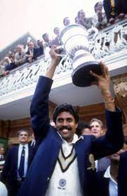
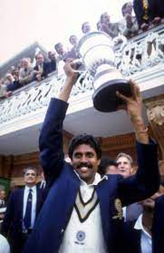

About Kapil Dev
Kapil Dev Ramlal Nikhanj (born 1959) is one of India's greatest cricketers, famously known as the **'Haryana Hurricane'**. He was a brilliant **fast-bowling all-rounder** and an inspirational captain who led India to its first-ever Cricket World Cup victory in 1983.
He holds the unique distinction of being the only player in cricket history to achieve the double of **over 5,000 Test runs and 400 Test wickets**. His passion, fighting spirit, and ability to turn a match single-handedly made him a national icon.
The Hurricane Rises in Haryana
Kapil Dev was born on **January 6, 1959**, in Chandigarh, Punjab (now part of Haryana). He grew up in a place not known for producing fast bowlers. With limited facilities, his natural athleticism and immense passion for cricket drove him. He was often coached on rough pitches, which helped build his resilience and robust technique—the qualities that would later define his international career.
A Tough Start to a Legendary Career
Kapil Dev made his debut for India in 1978 against Pakistan. In an era dominated by spin bowling in India, his genuine fast-medium pace and devastating inswingers were a rare and crucial asset. He quickly proved his worth, not just as a bowler, but as a fearless lower-order batsman, scoring quick runs when the team needed them most.
The All-Rounder's Glory
Kapil Dev redefined the role of the all-rounder in Indian cricket. He reached the milestone of **100 Test wickets** faster than any other Indian bowler. His powerful batting combined grit and aggression. He was the first player in history to take over 400 wickets and score over 5,000 runs in Test cricket, a testament to his balanced brilliance.
The 1983 World Cup Triumph
Kapil Dev’s greatest moment came in 1983 when he captained a young Indian team in the World Cup in England. Against all odds, India reached the finals. However, the turning point was the match against Zimbabwe, where India was struggling at 9 runs for 4 wickets. Kapil Dev played one of the most magnificent innings in history, scoring **175 runs not out**—a record that saved India and inspired the entire tournament run. His leadership culminated in India beating the mighty West Indies in the final, securing the country’s first World Cup trophy and changing the face of Indian cricket forever.
Legacy as a Leader and Icon
Kapil Dev retired in 1994 as the world’s leading wicket-taker in both Tests and ODIs. His career spanned 16 years, built on fitness, discipline, and a fiery love for the game. He taught a generation of cricketers how to compete globally with pride and conviction. Today, his name is synonymous with Indian sporting greatness and the spirit of fighting until the last ball.

 
